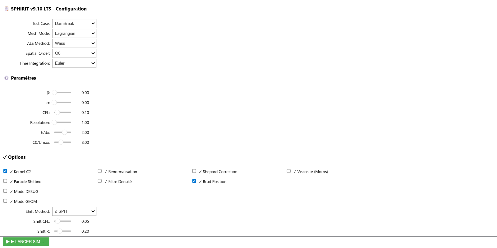
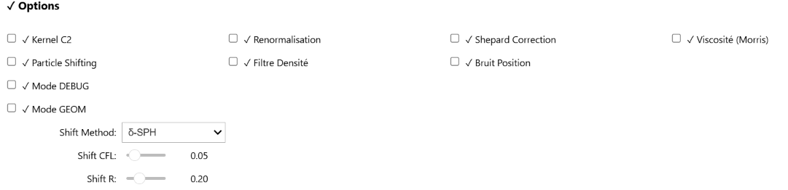

Guide D’utilisation
SPHirit dispose d’une interface graphique interactive qui permet de configurer et lancer une simulation sans modifier le code source.
Lancer l’interface
Ouvrez
code/Interface.ipynbdans VS CodeVérifiez que le kernel
sph (3.14.5)est sélectionné en haut à droiteCliquez sur Exécuter tout dans la barre du notebook

L’interface se divise en trois sections : Configuration, Paramètres et Options.
Choisir un cas test
Dans le menu Test Case, sélectionnez parmi les cas disponibles :
Cas test |
Durée estimée |
Description |
|---|---|---|
|
Quelques minutes |
Rupture de barrage — idéal pour débuter |
|
~30 min |
Taylor-Green Vortex — validation mathématique |
|
~30 min |
Écoulement de Poiseuille — validation viscosité |
|
~1h |
Impact de jets |
|
~3h |
Écoulement visqueux dans un entonnoir (ISO 2431) |
|
~3h |
Interaction fluide-structure (FSI) |
|
~3h |
Corps flottant (SPHERIC test-12) |
|
~1h |
Test de déplacement de maillage |
Note
Pour une première utilisation, choisissez DamBreak — c’est le cas le plus rapide et le plus facile à visualiser.
Paramètres numériques
Paramètre |
Valeur par défaut |
Description |
|---|---|---|
Resolution (dx) |
1 |
Résolution spatiale — plus la valeur est basse, plus la simulation est précise et lente |
h/dx |
2.0 |
Rayon de lissage SPH (recommandé : entre 1.2 et 2.5) |
CFL |
0.1 |
Nombre de Courant — contrôle la stabilité numérique |
C0/Umax |
7.0 |
Vitesse du son artificielle |
Time Integration |
Euler |
Schéma temporel : Euler (1), RK2 (2) ou RK3 (3) |
Spatial Order |
O0 |
Ordre de reconstruction spatiale : O0, O1 (MLS) ou O2 (Quad) |
ALE Method |
Wass |
Méthode ALE : Lloyd, Wass, Shepard ou Coupled |
Options physiques

Option |
Description |
|---|---|
Kernel C2 |
Utilise un kernel de classe C2 (recommandé) |
Renormalisation |
Active la matrice de renormalisation (incompatible avec MLS) |
Viscosité (Morris) |
Active la viscosité physique basée sur la formulation de Morris |
Shepard Correction |
Correction du gradient SPH par la méthode de Shepard |
Particle Shifting |
Active le déplacement de particules pour limiter les artefacts numériques |
Filtre Densité |
Filtre de densité pour éviter l’expansion en surface libre |
Bruit Position |
Ajoute un bruit aléatoire sur les positions initiales |
Lancer la simulation
Une fois la configuration choisie, cliquez sur ▶ LANCER SIMULATION.
La console affiche un résumé de la configuration appliquée puis la simulation démarre.
Les fichiers résultats .vtu sont sauvegardés automatiquement dans un dossier
nommé d’après vos paramètres (ex: DamBreaklagrangianwassp0dx1.0...).
Avertissement
Les fichiers VTK peuvent rapidement occuper plusieurs Go d’espace disque. Veillez à disposer d’un dossier de sortie hors OneDrive.
Valider les résultats
Une fois la simulation terminée, ouvrez code/Validation.ipynb pour comparer
vos résultats avec les données de la littérature scientifique.
Pour visualiser les particules en mouvement, ouvrez les fichiers .vtu
avec ParaView (voir visualisation).